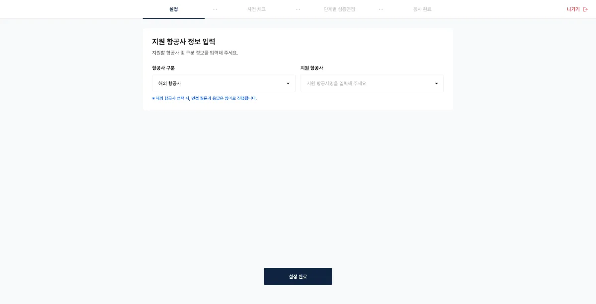
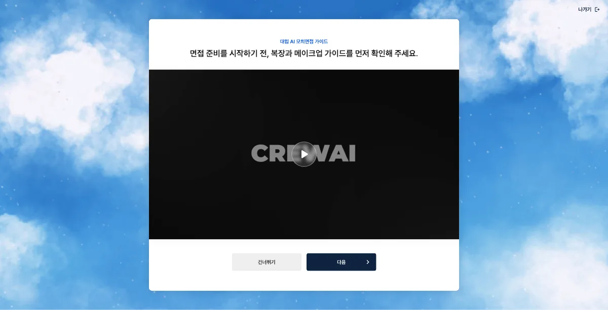
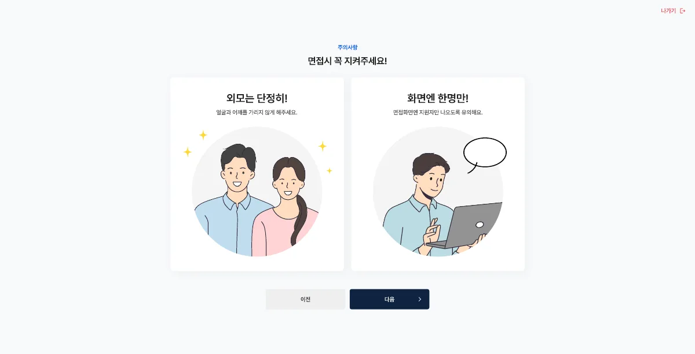
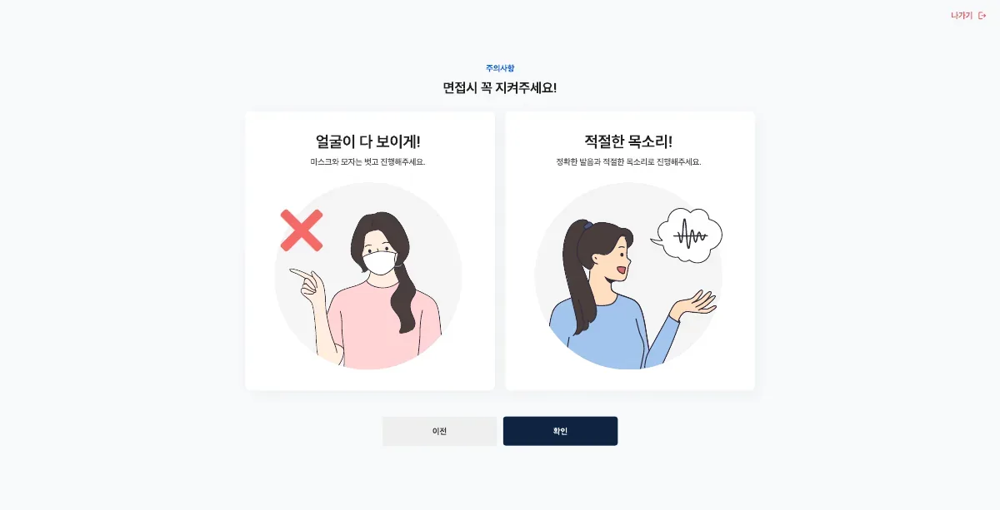
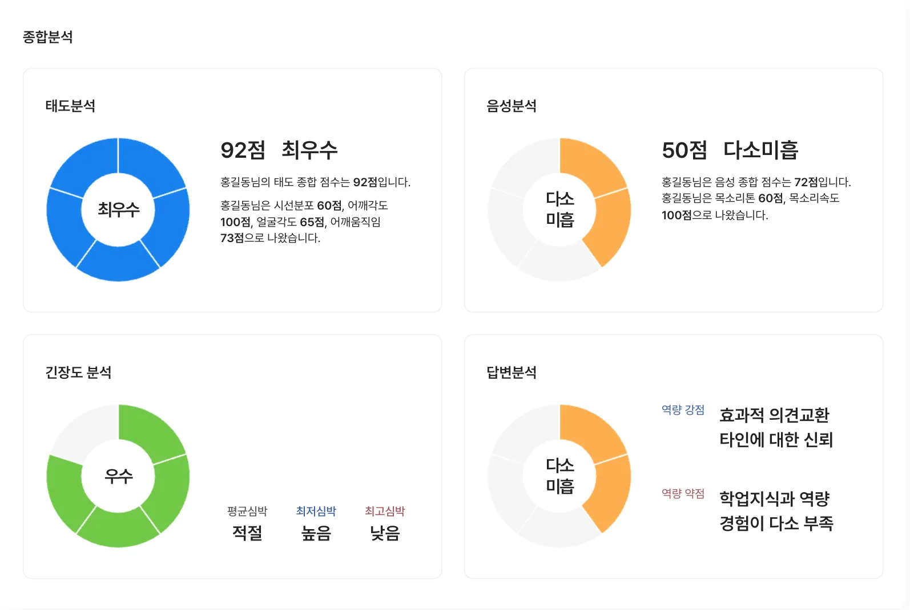
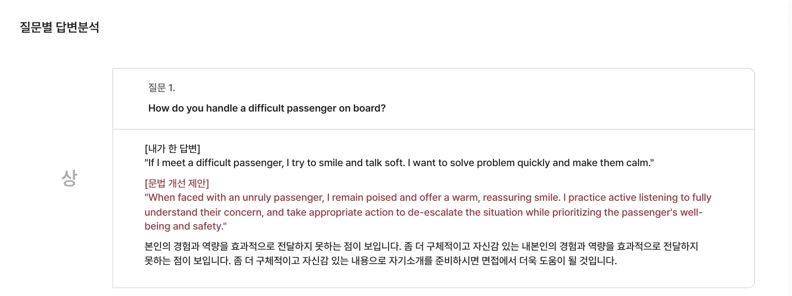

면접왕
AI가 예상질문을 만들고 모의면접 결과 리포트를 제공하는 면접왕의 승무원·항공사 지망생 전용 버전. 승무원학원 납품 제품으로, 준비부터 결과 확인까지의 화면 퍼블리싱.

사용 기술
HTML·CSS로 진로 선택부터 결과 리포트까지 화면 퍼블리싱 담당. 카메라·마이크 연동과 AI 분석 같은 기능 개발은 개발팀 몫이고, 그 결과가 들어갈 화면 구조와 스타일 작업
프로젝트 소개
원래 서비스는 대입 면접 중심. 생활기록부를 올리면 AI가 예상질문을 만들고, 모의면접 후 태도·음성·긴장도와 답변 내용을 분석한 리포트 제공.
이 서비스를 승무원·항공사 지망생 전용으로 다시 만든 버전 담당. 학원 수업에서 학생들이 반복 응시하고 대부분 처음 준비하는 사용자라, 무엇을 언제 해야 하는지 화면이 먼저 안내하도록 구성.
예상질문과 면접 구성
모의면접은 8문제, 4단계 구성. 지원동기로 시작해 지원 학교·학과 질문, 개인 기록 기반 질문을 거쳐 하고 싶은 말로 마무리. 직접 등록한 질문으로 연습 가능.
승무원 버전은 설정 단계에서 국내·해외 항공사와 지원 항공사를 먼저 입력받아 질문 구성. 해외 항공사 선택 시 질문과 답변이 영어로 진행되므로, 선택 바로 아래에 안내 배치.

- 항공사 구분 우선국내·해외 항공사 선택이 질문 언어와 구성의 기준
- 영어 진행 안내해외 항공사 선택 시 입력란 바로 아래에 안내 노출
- 4단계 진행 탭설정부터 응시 완료까지 현재 단계 상단 표시
면접 진행 화면
응시 전 카메라·마이크 확인 화면. 여기서 걸러내지 못하면 8문제를 다 본 뒤에야 영상이 비어 있음을 알게 되므로, 무엇이 문제인지 그 자리에서 보이도록 안내 영역 배치.
면접은 시간 제한으로 진행. 생각시간 30초 동안 질문 확인, 답변시간 90초 경과 시 자동 제출. 넘어가는 조건이 여러 개라 남은 시간과 현재 단계를 항상 같은 위치에 표시.
환경 체크 전 안내 단계 배치. 복장·메이크업 가이드 영상 이후 얼굴과 어깨를 가리지 않기, 화면에 지원자만 나오기, 마스크·모자 벗기, 정확한 발음으로 답하기를 화면 하나에 하나씩 안내. 응시 중에는 되돌릴 수 없는 조건이라 시작 전에 끊어서 안내.

- 가이드 영상복장·메이크업 기준. 건너뛰기 가능
- 주의사항 1외모 · 화면 인원
- 주의사항 2얼굴 · 목소리
- 카메라·마이크 확인통과해야 면접 시작


결과 리포트
리포트는 3단계 구성. 종합점수·분포도·합격라인으로 전체 위치를 보여주고, 태도·음성·긴장도를 항목별로 나눈 뒤, 문항마다 강점과 약점 정리. PDF 다운로드 지원.
점수 하나로 끝내면 다음에 뭘 고칠지 남지 않아, 위에서 아래로 갈수록 범위가 좁아지도록 설계하고 각 단계에서 바로 다음 단계로 내려가도록 연결.


응시 이력
학원 수업에서는 한 학생이 같은 면접을 여러 번 응시. 응시한 면접을 모아 실력 추이를 보는 화면을 두고, 목록에서 바로 결과 리포트로 들어가 이전 면접과 비교하도록 구성.